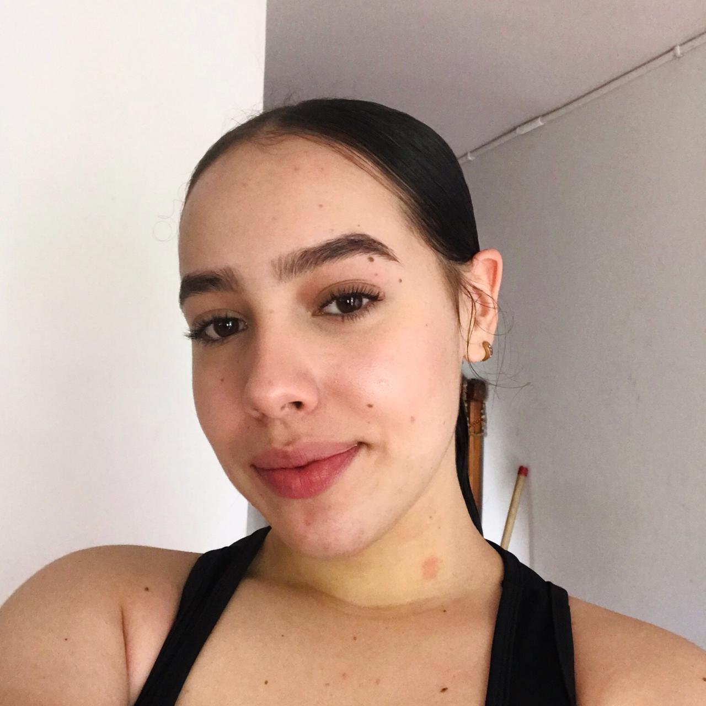
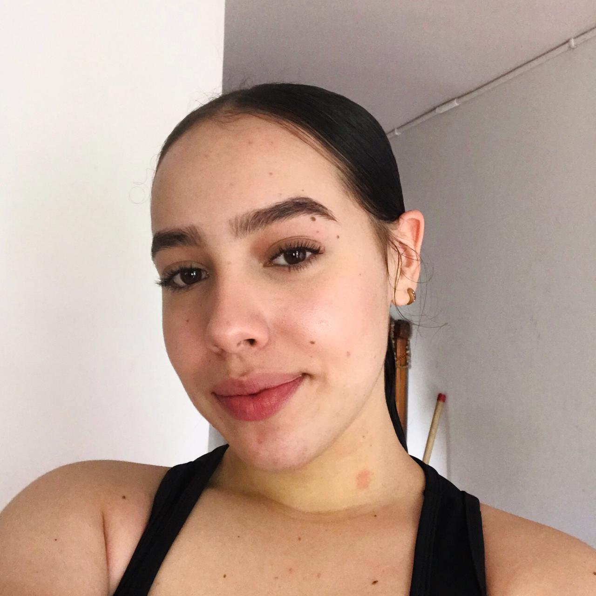

Foto
Estudios
y conocimientos
Habilidades
y cursos
Pasiones
y hobbies
Aspiraciones
PAULINA
GÓMEZ
ARANGO
ESTUDIANTE
Estudiante bachiller a punto de graduarse, bailarina en formación
profesional, soy una persona enamorada del aprendizaje,
amante de las letras, los números y las fórmulas :)
Direccion:
Teléfono:
Redes sociales:
Cra 20a N-53 91
2212403
paulinaarango__
2008-2011
2012-2015
2016-2021
Jardín Gota de leche.
Finalización de preescolar
Escuela Antonia Santos.
Finalizacion de la primaria
Bachillerato Javiera Londono
Finalización del bachillerato.
Bailar: +5PUNTOS
Escuchar y aconsejar: +5PUNTOS
Escritura: +3PUNTOS
Produccion audiovisual: +4PUNTOS
Programacion: +3PUNTOS
2019:Fortalecimiento de logica-SENA
Fortalecimiento de competencia lectora- SENA
2020: Ciudades inteligentes- EAFIT
Desarrollo de habilidades de industria 4.0- UNAL
2021: Mentor habilidades en la industria 4.0 - UNAL
Semillero: prevencion de drogas - UDEA
BAILAR

ESCRIBIR
MUSICA
APRENDER
LEER
Corto plazo
Voy a ingresar a la universidad, como primera opción química, la segunda opción es
medicina veterinaria. Además, me quiero seguir formando como bailarina profesional,
espero ingresar a otras dos academias. Quiero continuar con cursos que me llaman la
atención, por ejemplo: Fotografía, Idiomas, escritura, instrumentos, programación,
entre otros, espero que lleguen experiencias enriquecedoras y lindas.
Largo plazo
Después de un tiempo en la universidad quiero empezar más carreras profesionales, entre
las contempladas están: Psicología, historia, biología. Con la carrera de química me
gustaría mucho desarrollarme principalmente como docente o en industria buscando
generar productos de manera amigable con el ambiente, además quiero ser licenciada en
danza y ciencias puras, trabajando en las áreas rurales del país. Me gustaría crear mi
academia de baile con sentido y valor social y una fundación para los animales sin hogar.